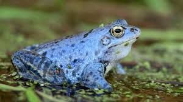

To płaz bezogonowy z rodziny żabowatych. Żaba moczarowa występuje w Europie Środkowej, Wschodniej i Północnej oraz części Azji. Obecna jest także w Polsce. Jest u nas dość pospolita. Preferuje niziny. Pionowy zasięg występowania to zaledwie 800 m n.p.m. Zamieszkuje tereny otwarte, suche lasy sosnowe, ogrody, parki miejskie. Poza okresem godów prowadzi lądowy tryb życia. Zimuje na lądzie. Preferuje tereny nizinne.
Pysk jest ostro zakończony. U kończyn tylnych znajduje się jeden modzel podeszwowy. Gatunek ten z wyglądu bardzo przypomina żabę trawną. Cechą charakterystyczną są ciemne plamy skroniowe, plama kątowa na grzbiecie, pręgi na kończynach tylnych. Na białym brzuchu nie ma plam, co ją odróżnia od żaby trawnej. Występuje bardzo duża różnorodność ubarwienia różnych osobników. U samców występują worki rezonacyjne. W okresie godów samce mają niebieskawy grzbiet, plamę niebieską na gardzieli oraz zwisające fałdy. U samic kolor skóry staje się w tym okresie bardziej jaskrawy. Samce są mniejsze od samic. Na tylnych kończynach mogą występować poprzeczne prążki. Oczy są duże i wystające. Tęczówki są złociste, a owalne źrenice są poziome. Nie występują parotydy. Widoczne są błony bębenkowe. Palce spinają wcięte błony pławne. Po obu bokach grzbietu biegną dwie podłużne listwy skórne. Skóra na spodnich częściach ud i na części brzucha jest lekko przezroczysta. Widać przez nią mięśnie i wnętrzności. W porze rozrodu samce są zaopatrzone w modzele godowe na pierwszych palcach przednich kończyn. Samce posiadają parzyste wewnętrzne rezonatory.
Samce w porze godów wydają odgłos kwilenia. Jest aktywna w dzień.
Pora godowa rozpoczyna się w kwietniu. Samica składa skrzek w postaci kulistych kłębów do zbiorników z wodą stojącą, najlepiej porośniętych pałką wodną, sitowiem, trzciną zwyczajną, o pH nie niższym niż 4,5, na głębokości od 10 cm do 2 m. Gody odbywają się masowo. Samce przypierają wówczas niebieskie zabarwienie. Są ich wówczas setki. Samica może znieść od 500 do 2700 jaj o średnicy 1,5-2 mm, a z otoczką 6-8 mm. Kijanki wykluwają się po 14-25 dniach. Kijanki są ciemnobrązowe i osiągają długość 4,8 cm. Małe żabki po przeobrażeniu mają długość 1-1,5 cm.
Zjada stawonogi, dżdżownice i ślimaki, pająki.
Gatunek ten nie jest zagrożony wymarciem. Ma status LC w Czerwonej Księdze Gatunków Zagrożonych. W Polsce żaba moczarowa znajduje się pod całkowitą ochroną.